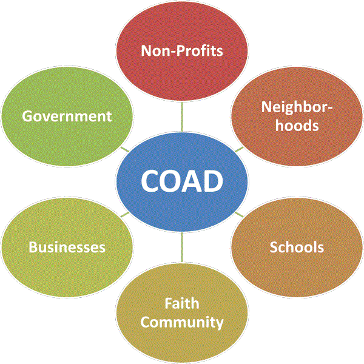

Grundy County COAD
The purpose of the Grundy County Community Organizations Active in Disaster (Grundy COAD) is to enhance the efforts of member organizations through inter-agency planning, relief, response and recovery activities, all directed toward the goal of giving area residents adequate and timely services, impartially and uniformly delivered, when a disaster strikes Grundy County, Illinois. Guided by the core principles of the 4Cs – Cooperation, Communication, Coordination, and Collaboration. Grundy COAD members provide the leadership that builds strong, resilient communities and delivers hope in times of need. The Grundy COAD is a coordinating organization and will not assume direct operational responsibilities during any disaster situation. Grundy COAD exists to foster better service by its members to communities struck by disaster. This is done through preparedness activities that include planning among Grundy COAD members and providing education to the general public, and by responding to and helping the communities of Grundy County recover from disaster.